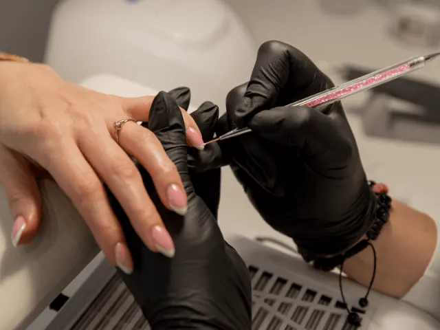

Waar worden jouw nagels verzorgd in Nijmegen?
Gepubliceerd op 1 september 2023, bijgewerkt op 26 februari 2024
Onderdeel van de gids Nagelsalon in Nijmegen

Ah, Nijmegen – de stad van gezelligheid, historische charme en natuurlijk, prachtig verzorgde nagels! Als je op zoek bent naar een plek om je nagels te laten verwennen in deze bruisende stad, dan ben je hier aan het juiste adres. We hebben ons verdiept in de wereld van nagelverzorging in Nijmegen en hebben een lijst samengesteld van de beste plekken waar je nagels de koninklijke behandeling krijgen die ze verdienen. Dus ga er lekker voor zitten en laat je meevoeren door deze informatieve gids!
Nagelparadijs in Nijmegen: Een Overzicht van Hotspots
Welkom in het nagelparadijs van Nijmegen! Deze stad zit boordevol geweldige salons waar je je nagels kunt laten transformeren tot ware kunstwerken. Of je nu gaat voor klassiek elegant, trendy design of uitdagende nail art, Nijmegen heeft voor elk wat wils. Ontdek de hotspots van de stad, van gezellige boetieks tot luxe salons. Met een breed scala aan stijlen en sfeer, zul je zeker een plek vinden die je nagels een make-over geeft waar je u tegen zegt!
Op Zoek naar Perfectie: Nagelsalons met Vakmanschap
Als het gaat om nagelverzorging, draait alles om vakmanschap. Je wilt tenslotte niet zomaar iemand met je nagels laten knoeien! In Nijmegen zijn er salons die uitblinken in hun vak en ervoor zorgen dat je nagels er onberispelijk uitzien. Van professionele manicures tot zorgvuldig aangebrachte nagellak, deze salons zijn toegewijd aan het leveren van kwaliteit. Dus als je op zoek bent naar perfectie, zoek dan naar de salons die bekend staan om hun vakmanschap – je nagels zullen je dankbaar zijn!

Hygiëne Helden: Schone en Veilige Nagelsalons
Nagelverzorging is niet alleen een kunst, maar ook een kwestie van hygiëne. Je wilt je nagels laten verzorgen in een salon waar netheid en veiligheid hoog in het vaandel staan. Let op salons die strikte hygiëneprotocollen volgen, zoals het steriliseren van gereedschap en het schoonhouden van werkstations. Een schone en veilige omgeving is essentieel om ervoor te zorgen dat je nagels niet alleen mooi, maar ook gezond blijven. Dus kies voor hygiëne helden die je nagels beschermen!
Betaalbare pracht: Kwaliteit binnen Je Budget
Je nagels laten verzorgen hoeft geen fortuin te kosten. In Nijmegen vind je salons die prachtige nagelbehandelingen aanbieden tegen betaalbare prijzen. Van budgetvriendelijke opties tot speciale aanbiedingen en pakketten, er is voor elk budget wel iets te vinden. Verwen jezelf zonder dat je bankrekening in protest gaat – je verdient het! Dus ga op zoek naar salons die je nagels laten stralen zonder je portemonnee te plunderen.

Het is tijd voor onze tips in Nijmegen
Agacare Pedicure praktijk
Agacare Pedicure praktijk in Nijmegen staat bekend om hun professionele voetverzorging en deskundige pedicures. Met een focus op het verbeteren van de gezondheid van je voeten en je nagels, bieden ze doeltreffende oplossingen en een vriendelijke service. Klanten waarderen hun expertise en persoonlijke benadering.
Less is more
Bij Less is more draait het allemaal om natuurlijke schoonheid en eenvoud. Deze salon in Nijmegen biedt een minimalistische benadering van nagelverzorging, met de nadruk op subtiele, verfijnde resultaten. Klanten prijzen, hun rustige sfeer en de hoogwaardige producten die ze gebruiken.
Salon jij
Salon jij is dé plek in Nijmegen waar persoonlijke aandacht centraal staat. Met een breed scala aan diensten, waaronder nagelverzorging, zorgen ze ervoor dat elke klant zich speciaal voelt. Klanten waarderen de warme en gastvrije sfeer van de salon en de toegewijde service die ze bieden.
Mgm Nails
Mgm Nails is een innovatieve nagelsalon in Nijmegen die streeft naar perfectie in nagelverzorging. Met oog voor detail en een passie voor trends, bieden ze unieke ontwerpen en hoogwaardige behandelingen. Klanten waarderen hun creativiteit en vakmanschap, en genieten van de professionele service die ze ontvangen.
Conclusie
Nu ben je goed op weg naar prachtig verzorgde nagels in Nijmegen. Met ons overzicht van hotspots, vakmanschap, hygiëne en betaalbare opties kun je de juiste keuze maken voor jouw nagelverzorgingsavontuur. Geniet van de fantastische salons die Nijmegen te bieden heeft en laat je nagels schitteren als nooit tevoren. Dus waar wacht je nog op? Spring in de wereld van nagelverzorging in Nijmegen en geef jezelf die glamoureuze nagelbehandeling die je nagels verdienen!